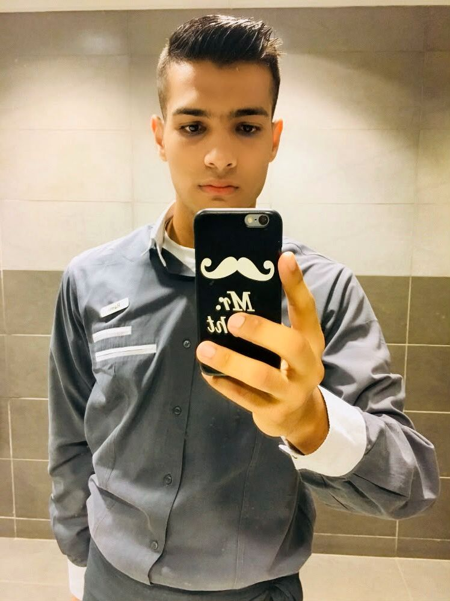
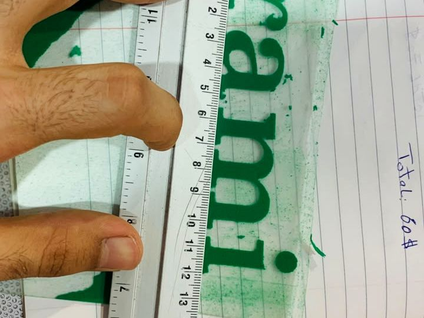
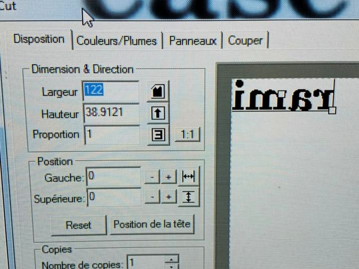
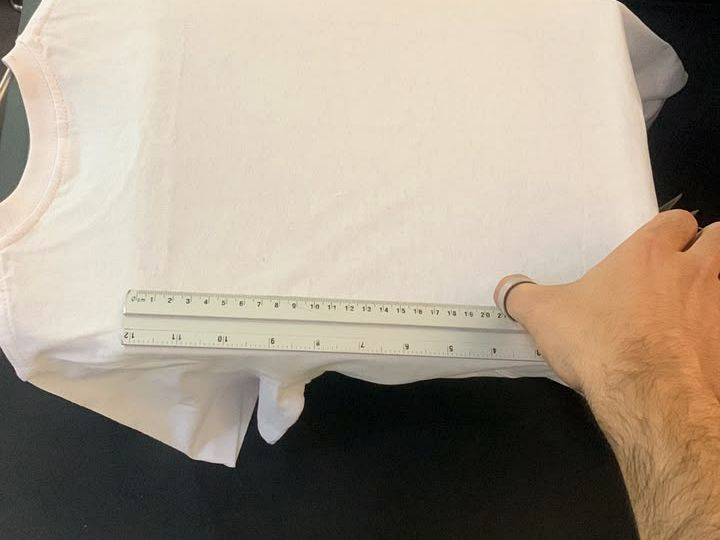
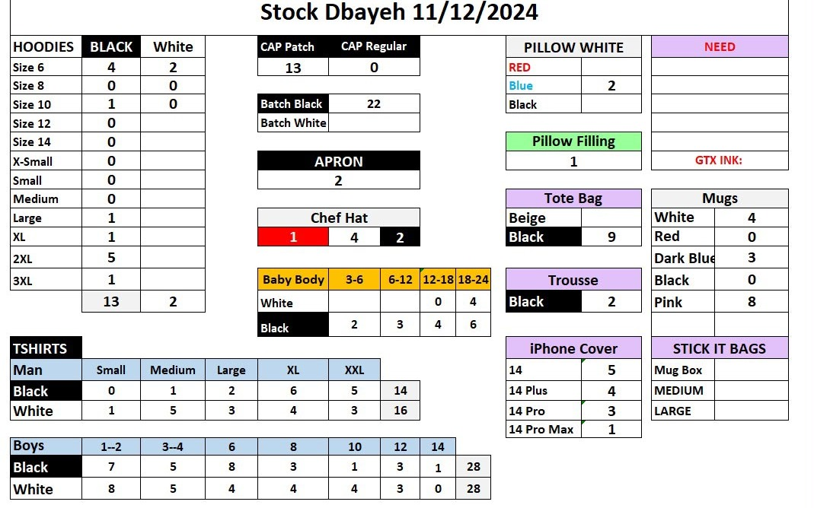

Customized Printing & Branch Operations
Prepared designs, measured placement, handled products, supported customers, checked quality and organized stock.
Professional Portfolio • 2026
I am Rami Almohamad—a creative production professional, former printing branch manager, hospitality worker and freelance web developer. I combine practical responsibility with patience, communication and a strong desire to support children and communities.

Based in Lebanon
Computer Science student, former printing branch manager, hospitality worker and freelance web developer.
About me
I have worked across three different fields that strengthened one another. In customized printing, I managed customer requests, prepared designs, checked measurements, produced personalized items and monitored branch inventory. In hospitality, I learned to remain calm, respectful and attentive while working under pressure. As a freelance web developer, I built digital projects and learned how to solve problems independently.
These experiences taught me that good work is not only about technical skill. It is also about listening carefully, keeping promises, organizing details and making people feel respected.
Prepared designs, measured placement, handled products, supported customers, checked quality and organized stock.
Served guests professionally, worked with a team, maintained cleanliness and handled busy service periods.
Created responsive websites, user interfaces and digital content using modern front-end and back-end tools.
Customized printing
I worked with clothing, mugs, caps, bags, phone cases and personalized photos. My role included customer communication, design preparation, accurate placement, production and quality checking.
Understand the customer’s idea, product, size, colours and deadline.
Adjust dimensions, organize artwork and confirm the visual concept.
Position the design carefully for balance, accuracy and consistency.
Print, inspect the result and prepare the completed order for delivery.



Selected work
These examples show production flexibility and attention to detail. Some artwork was selected or provided by customers; my role was preparation, placement and production.

Branch responsibility
I regularly counted stock and recorded quantities in Excel. The sheet included hoodies, T-shirts, caps, mugs, bags, phone covers and other materials. This helped identify missing products, prepare restocking needs and avoid delays in customer orders.
Customer & supervisor feedback
These selected screenshots are included as evidence. Phone numbers, names and unnecessary private details were removed or cropped to respect privacy.
Hospitality experience
As a waiter, I learned to welcome guests respectfully, organize orders, coordinate with colleagues, maintain cleanliness and deliver food carefully during busy service periods.
Listening carefully, answering politely and making people feel respected.
Coordinating with kitchen and service colleagues so orders arrive correctly.
Maintaining a safe, organized and presentable working environment.
Staying calm and useful when the workplace becomes busy or plans change.
Digital experience
I study Computer Science and have freelance experience through Upwork and independent projects, creating websites and digital interfaces. I can support online communication, website updates, simple visual content and technical problem-solving.
A responsive mental-health information concept.
View project ↗ Web projectA modern responsive landing-page experience.
View project ↗ Web projectA visual concept focused on colour and layout.
View project ↗ Web projectAn entertainment fan-site concept and front-end build.
View project ↗Community contribution
Help children create drawings, simple posters, personalized gifts or safe printing concepts that turn their ideas into something visible.
Support simple computer activities, digital storytelling, posters and beginner-friendly website or design exercises.
Use inventory and branch-management experience to prepare materials, track supplies and keep activities organized.
Use hospitality and customer-service experience to listen, encourage participation and treat every child with dignity.
Let’s connect
I am motivated to bring my practical skills, energy and creativity to a meaningful team and community project.